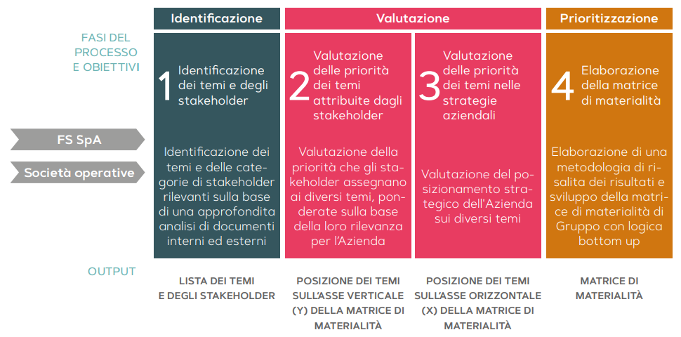
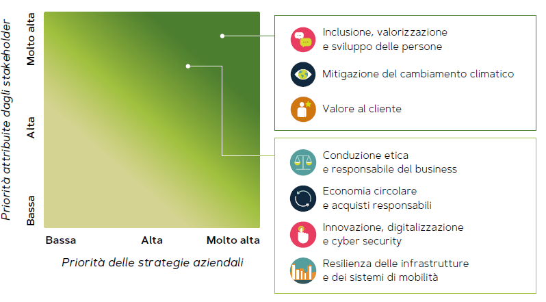
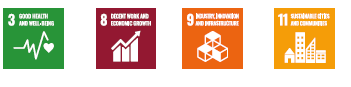

| Sezione | Descrizione | Unità | Valore |
|---|---|---|---|
| Risultati Economici | Risultato netto | mln € | 193 |
| Valore economico direttamente generato | mln € | 12.328 | |
| Valore economico distribuito | mln € | 10.444 | |
| Investimenti | mln € | 12.537 | |
| Traffico su Ferro | Viaggiatori-km | mld | 21,5 |
| Treni-km | mln | 270 | |
| Tonnellate-km (merci) | mld | 21,9 | |
| Treni-km (merci) | mln | 43 | |
| Traffico su Gomma | Passeggeri-km | mld | 1,7 |
| Bus-km | mln | 178 | |
| Energia e Ambiente | Consumi di energia finale | mln GJ | 26,4 |
| Emissioni di gas a effetto serra | mln tCO2 | 2 | |
| Gare aggiudicate con criteri di sostenibilità | % | 90 | |
| Qualità del Servizio | Trasporto passeggeri su ferro (Frecce) | 0-10 min | 82,5% |
| Trasporto passeggeri su ferro (IC Giorno/Notte) | 0-15 min | 88,5% | |
| Trasporto regionale su ferro | 0-5 min | 93% | |
| Trasporto passeggeri su gomma (urbano) | 0-5 min | 95% | |
| Trasporto passeggeri su gomma (extraurbano) | 0-15 min | 95,3% | |
| Customer satisfaction (media/lunga percorrenza) | % soddisfatti | 97,1% | |
| Sicurezza e Investimenti | Investimenti in sicurezza (infrastruttura) | mln € | 3.715,0 |
| Investimenti in sicurezza (trasporto) | mln € | 439,5 | |
| Totale personale | n. | 81.906 | |
| Formazione | mgl/ore | 659 |
Il Gruppo ogni anno aggiorna l’analisi per l’identificazione delle tematiche sociali, ambientali, di governance ed economiche prioritarie (cosiddetta “matrice di materialità”), necessaria per riconoscere le sfide e le opportunità di creazione di valore nel lungo periodo. L’analisi 2021 è partita dalla revisione dell’albero dei temi elaborato nel 2020, che ha tenuto conto degli orientamenti strategici aziendali e delle evoluzioni del contesto esterno volta ad anticipare le tematiche emergenti, la cui gestione risulterà essenziale per competere nel futuro. Il processo di aggiornamento dei temi prioritari per il Gruppo, costruito con logica bottom up (partendo quindi dall’analisi delle informazioni raccolte dalle società controllate), ha previsto le seguenti attività:
La metodologia di aggregazione dei dati elaborati dalle società ha tenuto conto di: rilevanza e dimensione della società, numerosità degli stakeholder esterni coinvolti, peso organizzativo del management consultato.
La matrice di materialità sottostante rappresenta il quadrante superiore destro della matrice complessiva che riporta le priorità percepite dagli stakeholder (asse y), confrontate con le priorità del Gruppo (asse x), considerando gli impatti subiti e generati all’esterno.
Il tema “Sicurezza delle persone: valori, tecnologie e cultura”, risultato prioritario in tutte le società che hanno contribuito alla matrice, non è stato incluso nella rappresentazione aggregata poiché, come ha potuto più volte ribadire l’Amministratore Delegato di FS, «per manutenzione e sicurezza non ci sono limiti e non ci devono essere limiti». Per tale ragione, il tema in parola non è graficamente incluso nella matrice di materialità in quanto trasversale e con priorità assoluta, nella visione del management, rispetto agli altri temi
Sicurezza delle persone: valori, tecnologie e cultura”, ogni società del Gruppo FS opera promuovendo la salute e sicurezza sul lavoro, attraverso la prevenzione di incidenti e infortuni delle persone, e garantendo ai clienti i più elevanti standard di sicurezza del viaggio, attraverso la manutenzione, la protezione in stazione e a bordo e la sicurezza della circolazione, contribuendo al raggiungimento dei seguenti SDGs:
